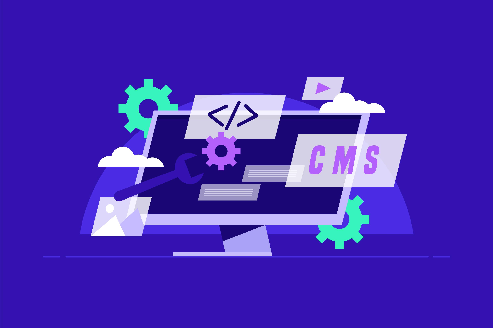

Выбор CMS для Вашего проекта
Как выбрать CMS для Вашего проекта?
🌐 В интернет-пространстве, где конкуренция за внимание пользователей становится всё более острой, выбор правильной CMS (системы управления контентом) для Вашего проекта — это критически важный шаг. CMS управляет всем информационным содержимым Вашего сайта, позволяя Вам не только публиковать, но и организовывать, редактировать и контролировать контент без необходимости глубоких технических знаний. В этой статье мы рассмотрим основные факторы выбора CMS, а также предложим краткий обзор популярных систем.
🔍 Прежде всего, необходимо определить цели Вашего проекта. Разные CMS могут подходить для различных типов сайтов — от блогов и портфолио до корпоративных сайтов и интернет-магазинов. Рассмотрим несколько популярных CMS. WordPress — мировой лидер среди CMS, подходит для блогов, корпоративных сайтов, портфолио и интернет-магазинов. Бесплатный, с огромной библиотекой плагинов, что позволяет легко адаптировать сайт под конкретные нужды. Joomla — популярная система с интуитивно понятным интерфейсом, подходит для сложных проектов с продвинутыми функциями и множеством пользователей. Отлично подходит для сообществ и социальных платформ. Drupal — мощная CMS с открытым кодом, часто используется для крупных проектов с высокими требованиями к безопасности и кастомизации. Подходит для сайтов с большим объёмом контента. OpenCart — бесплатная CMS для интернет-магазинов с поддержкой мультивалютности и скидок. Идеально для начинающих предпринимателей, стремящихся создать свой интернет-магазин. MODX — гибкая система с открытым кодом, позволяющая создавать сайты «с нуля». Идеальна для тех, кто хочет полную свободу в дизайне и функционале. Shopify — коммерческая CMS для интернет-магазинов, предлагающая все необходимые инструменты для продажи онлайн. Подходит для пользователей, желающих быстро запустить свой магазин без технических сложностей.
Российские CMS: 1С-Битрикс — платная CMS от компании «1С», идеально подходит для крупных коммерческих проектов и интернет-магазинов. Интегрируется с 1С и маркетплейсами, что делает её популярной среди российских предпринимателей. CMS.S3 — популярная российская система с удобным интерфейсом, подойдет для большинства стандартных проектов, включая корпоративные сайты и блоги. Netcat — подходит для дорогих проектов с высокими требованиями к безопасности, часто используется для корпоративных сайтов и порталов. UMI.CMS — платная CMS для бизнес-проектов с хорошей SEO-оптимизацией. Отличный выбор для компаний, желающих улучшить свою видимость в интернете. Tilda — российский конструктор сайтов с CMS-элементами, удобен для быстрого создания лендингов и визиток. Идеален для маркетологов и малых бизнесов.
Дополнительные популярные CMS: uCoz — популярный конструктор сайтов, который предоставляет достаточно возможностей для создания личных и бизнес-страниц. Wix — зарубежный конструктор сайтов, предлагающий удобные инструменты для быстрого создания простых сайтов и портфолио. Webflow — платформа для создания адаптивных сайтов с визуальным редактором, идеально подходит для дизайнеров. Weebly — ещё один конструктор, упрощающий процесс создания сайтов благодаря интуитивно понятному интерфейсу. LPgenerator — подходит для создания лендингов, позволяя быстро разрабатывать страницы для маркетинговых кампаний. Airtable — это мощный инструмент, который позволяет создать собственную CMS без необходимости написания кода. Такое решение идеально подходит для тех, кто хочет легко управлять данными и организовывать контент.
💻 Ещё один важный фактор — это уровень пользовательских навыков. Некоторые CMS предлагают более интуитивно понятный интерфейс и лёгкость в использовании, что будет полезно, если Ваша команда не обладает техническим бэкграундом. Например, Wix и Squarespace известны своим простым конструктором сайтов, который позволяет быстро создавать красивые страницы без программирования. Если у Вас есть технические специалисты в команде, рассмотрите более сложные платформы, такие как Drupal или Joomla, которые предоставляют расширенные возможности для настройки и разработки. Безопасность также имеет большое значение. Время от времени CMS становятся целями хакеров, поэтому стоит выбрать платформу с хорошей репутацией в области безопасности и регулярными обновлениями. WordPress, например, регулярно обновляется и имеет множество плагинов для повышения безопасности. Проверьте также наличие встроенных функций безопасности, таких как защита от спама и возможность резервного копирования данных.
🔄 Интеграция с другими инструментами и платформами — ещё один немаловажный критерий. Если Вы планируете использовать маркетинговые инструменты, системы аналитики или социальные сети, убедитесь, что выбранная CMS поддерживает необходимые интеграции. Это поможет улучшить эффективность Ваших маркетинговых стратегий и упростить управляемость контентом. Внимание также следует обратить на возможности SEO (поисковой оптимизации). Хорошая CMS должна предоставлять инструменты для настройки метаданных, структурирования контента и генерации карт сайта. Это особенно важно, если Вы хотите улучшить видимость Вашего проекта в поисковых системах. Многие популярные платформы, такие как WordPress, предлагают плагины для SEO, которые значительно упрощают этот процесс.
💰 Не забывайте о стоимости. Некоторые CMS бесплатны, но многие предлагают платные тарифы с различными функциональными возможностями. Важно понимать, что стоимость проекта может включать в себя не только лицензию на программу, но и хостинг, покупку тем и плагинов, а также возможные затраты на техническую поддержку. Сравните все эти факторы, чтобы обеспечить наиболее подходящий вариант для Вашего бюджета.
🔧 В заключение, выбор CMS для Вашего проекта — это не простая задача, требующая тщательного анализа. Определите свои цели, уровень своих технических навыков, обратите внимание на безопасность и интеграцию, а также учтите SEO-функциональность и стоимость. Правильно подобранная CMS поможет Вам эффективно управлять контентом и достигнуть успеха Вашего проекта в интернете.